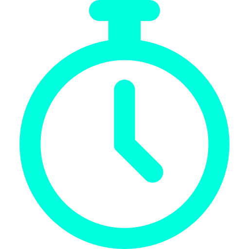

3 alertas
3 alertas
>>>>>>> gestor
Visão Operacional e Estratégica
Filtrar por:
24h
7d
30d
DISPONIBILIDADE GLOBAL

%
meta: 99.5%
+0.04%
NÍVEL DE RISCO

/100
nível: moderado
+6 pts
INCIDENTES CRÍTICOS

ativos
nível: moderado
+2
ESTABILIDADE OPERACIONAL

%
meta: 85%
-1.8
MTTR MÉDIO

min
meta: 25 min
-18%
TENDÊNCIA OPERACIONAL

> 4h
próx 4h: risco elevado
previsão
ESTABILIDADE OPERACIONAL
Previsão de Falhas
Tendência de aumento nas próximas 4 horas
Modelo preditivo estima +5 incidentes médios entre 22:00 e
2:00
Tendência de aumento nas próximas 4 horas
Modelo preditivo estima +5 incidentes médios entre 22:00 e
2:00
IMPACTO OPERACIONAL POR AMBIENTE
Processos: CRÍTICO
Necessidade de Analistas
Onde redistribuir equipe
| ÁREA / SISTEMA | INCIDENTES | ANALISTAS | SITUAÇÃO | AÇÃO |
|---|---|---|---|---|
| ATC-CORE-01 | 7 | 2 | ATENÇÃO | |
| ATC-CORE-01 | 7 | 2 | CRÍTICO | |
| ATC-CORE-01 | 7 | 2 | NORMAL |
Exportar Relatório